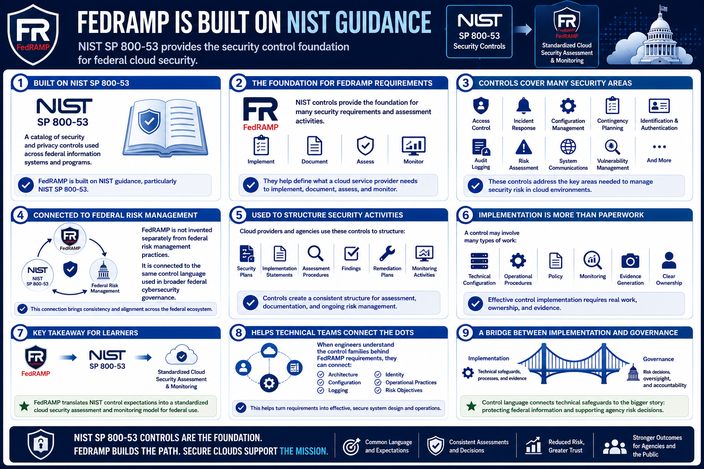

What Is FedRAMP?
Relationship to NIST SP 800-53
Connecting to LMS... Progress: in progress
Version 1.0 | Date: 2026-06-16 | Educational overview of FedRAMP concepts.

Narration
FedRAMP is built on NIST guidance, particularly NIST Special Publication 800-53. NIST SP 800-53 provides a catalog of security and privacy controls used across federal information systems and programs.
In FedRAMP, those controls provide the foundation for many security requirements and assessment activities. They help define what a cloud service provider needs to implement, document, assess, and monitor.
Controls cover many areas, including access control, incident response, configuration management, contingency planning, identification and authentication, audit logging, risk assessment, system communications, and vulnerability management.
The NIST relationship is important because FedRAMP is not invented separately from federal risk management practices. It is connected to the same control language used in broader federal cybersecurity governance.
Cloud providers and agencies use these controls to structure security plans, implementation statements, assessment procedures, findings, remediation plans, and monitoring activities.
Control implementation is not just a paperwork activity. A control may involve technical configuration, operational procedures, policy, monitoring, evidence generation, and clear ownership.
For learners, the key takeaway is that FedRAMP translates NIST control expectations into a standardized cloud security assessment and monitoring model for federal use.
This connection also helps technical teams. When engineers understand the control families behind FedRAMP requirements, they can connect architecture, configuration, logging, identity, and operational practices to specific risk objectives.
The control language provides a bridge between implementation and governance. It lets a technical safeguard become part of a larger story about how the cloud service protects federal information and supports agency risk decisions.